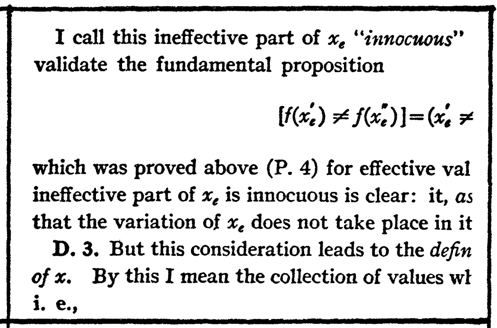
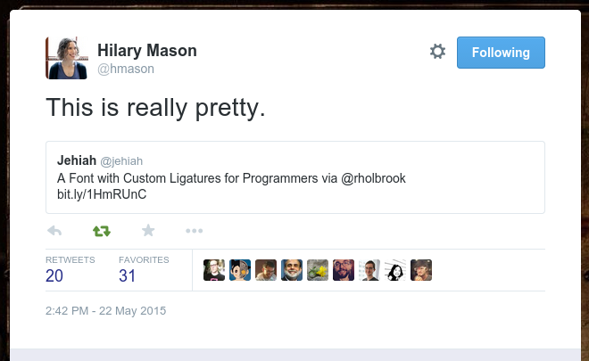

He wrote about Mama
Note
His English grandmother
- “hammer (with a cracked handle)
- handsaw (I learned years later
that it was woefully dull) - monkey wrench
- Stilson wrench
- screwdriver
- dull hatchet”
Note
If your tools are faulty, then unless you can tell, you will often just blame yourself
Note
I asked permission to adjust it just for the day
Result
Win
Hypothesis
- Co-workers
- Conferences
- Pair programming
- Watching screencasts
Q:
Note
Hypothesis — are IDEs popular because OS’s make it so hard to switch windows?
Q:
Q:
Q:
Q:
Q:
Q:
- Bash
- Zsh
- Emacs
- Python!
Previous / Next line Ctrl-P ↑↓ Ctrl-N
Back / Forward char Ctrl-B ←→ Ctrl-F
Back / Forward word Alt-B ←→ Alt-F
Beginning / End of line Ctrl-A ←→ Ctrl-E
Q:
Do you use interactive search?
Ctrl-R
↑
↓
Ctrl-S
Note
(pronounced “Lay-vin”)
Note
You can tell what was important to the English by how they allocated monosyllables.
Q:
Transactions of the AMS, 1923
Transactions of the AMS, 1974
— Donald Knuth
- Create the Metafont language for fonts
- Design and render his own typefaces
- Invent the TEX typesetting language
Note
He reasoned that it was better to spend a year writing new tools than to try to get good results out of the old one.
Another famous example: Python!
Python saved time
Django Forms
Django Forms
Home Directory
- Version control!
- Save shell’s dot files
- Collect your own commands
Note
See my own home directory with ,home switch
Watch demonstrations
Confession
I once disappeared into my tools

- Repetition
- Traction
Repetition
Repetition
Traction
Traction
Two solutions
- Fight your emotions
- Develop more traction
Traction
Examples
pydoc
Jedi
ag
Magit
Note
Users complained online about the diff format. It took me one day, and I could read it fine.
My next tweak?
Tooling
Q:
A:
Yourself
Ola, talk yesterday
Note
My mood is often completely changed, when blundering around the kitchen at night, from simply turning on enough light.
Note
So, why did I quote that passage from Tolstoy?
Thank You! — @brandon_rhodes